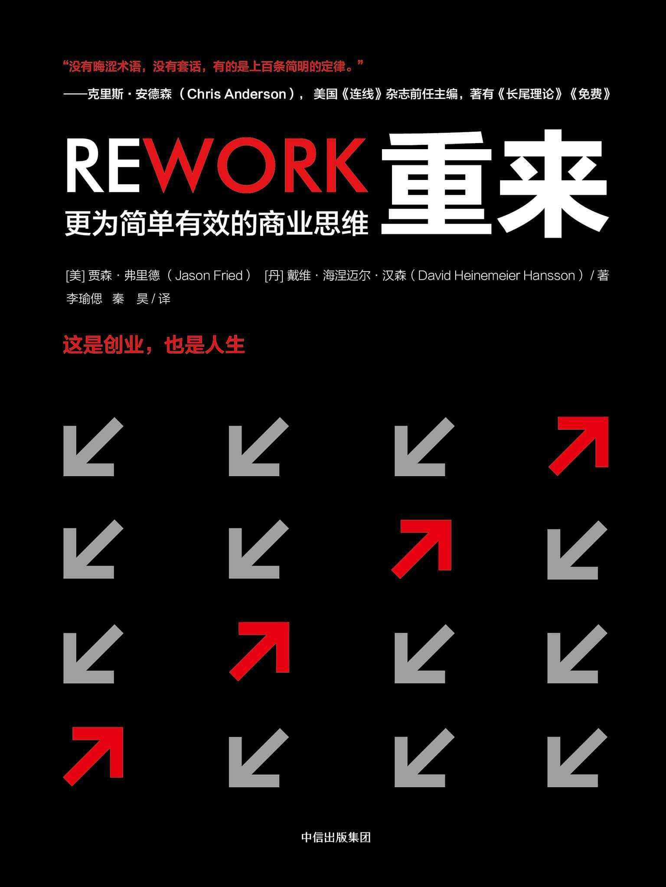

注：【】部分为笔者心得，非原文摘抄。
- 【平庸的人最大的愿望就是其他人都跟他一样平庸。】
- “现实世界”并不存在，那只是个借口，只是某些人为了开脱自己的无所作为，跟你一点关系都没有。
- 【成功的经验固然值得借鉴，但要特别小心地剔除其中人为加入或夸大的段子。】
- 逗留在过去的失败中是无法进化的，进化是建立在成功的基础之上的。
- 除非你是个预言家，否则那些所谓长期商业计划就是痴人说梦。
- 计划和即兴发挥不会合拍。
- 你必须能够即兴发挥。
- 只有在做一件事的过程中，才能掌握更多的相关信息。千万不要在行动之前就作出重大决定。
- 【长远规划应该关注方向和目标，但对细节不必过于细致。】
- 无计划地工作看上去挺悬，但是盲目遵循不切实际的计划，后果则更可怕。
- 【员工的成就感和自豪感与公司的赢利能力成正比，与公司规模无实际联系。】
- 【应对扩大公司规模持十分谨慎的态度，对上市和外来投资也应如此。】
- 【鼓励员工更有效率而不是更长时间地工作。】
- 你所需要的只是一个创意，加一点点自信，以及一点勇气，就可以启程了。
- 难道你愿意终生复制别人的产品或者只是搭配、组合别人发明的东西吗？你应该创造你独有的传承。不要只是坐在原地等别人来为你作出改变，不要以为你得需要一个大团队才能做出一番别样的事业来。
- 【继续发扬 DIY 的黑客精神！】
- 想要创造一个伟大的产品或某项卓越的服务，最简单直接的办法就是做你自己想用的东西。
- 【不要在下一个十年后悔自己现在想到了却没做的事，不要在老去之后后悔年轻时努力不够。】
- 【“没有时间”只是借口，如果你重视某件事，你自然会有时间。】
- 如果你总是为找不到完美的时刻而困扰，那么，完美的时机永远不会出现。
- 起步之后，你必须一直牢记自己到底为什么要做这件事。你必须心怀信念，要有主心骨，要了解自己到底是为什么而奋斗，并且要让世人明白你的信念。
- 强大的主见是要付出代价的。
- 如果你的说法没有引起任何人的心烦意乱或者心花怒放，只能说明你的推广力度可能不够，或者方式太无趣。
- 【喊口号是因为做不到。】
- 那些“提供最佳服务”的标语，仅仅是人们做出来贴在墙上的噱头。
- 坚守某个信念并不仅仅是把它写下来。不但要相信它，还要让它成为你的生活方式。
- 事实上，不管你创办的是什么类型的企业，都要尽可能少花别人的钱。
- 花别人的钱听起来很美，实际上是你落入了圈套：
- 失去控制权；
- “套现离场”的想法会压倒“创建优秀公司”的梦想；
- 用别人的钱容易上瘾；
- 融资都不是好买卖；
- 客户不再荣登“图腾柱”；
- 筹钱极其费神；
- 【别把 VC 捧成圣人了，他们不过是想利用你来赚更多的钱而已。创业阶段最重要的目标是实现自己的造血功能。】
- 任何人如果在创业初期抱着“我们以后会想到办法赚钱”的态度，他们的创业终将成为笑谈。
- 无法通往盈利之路的事业不能称为事业，只是嗜好。
- 创业之初不要有任何依赖思想。
- 【还没开始（或一开始）就盘算着该如何应对失败的人，还是老老实实打工去吧！】
- 【像机长一样面对自己要做的事。】
- 你需要的是承诺策略，而不是退出策略。
- 如果你真的想努力做有奔头的事，那就不要放手。天上掉下的馅饼不会一直砸在你头上，不要让你的大好事业成为别人的嫁衣。
- 一定要轻装上阵。
- 【藏獒之所以成为藏獒，是因为从小就饱受饥寒的折磨。】
- 有限的资源能激发你在现有条件下完成任务的能力。没有一点浪费的空间，一切都需要你发挥最大的创造力。
- 在你高唱“始终不够”的悲观论调之前，试试看自己利用现有的资源能走多远。
- 与其做个半成品，不如做好半个产品。
- 很多东西都是越简短越好。
- 从核心出发。
- 当你发现事业的中心时，你就会恍然大悟，然后你应该把所有的精力都集中在这个中心上，这是你未来成功的基础。
- 【过早关注细节容易造成设计过度或偏离主旨。】
- 只有在真正开始后，才能认清到底哪些细节才是最重要的。
- 主动作出决策，不要苦等最佳方案，要积极决策、果敢前进。
- 项目周期过长会打击士气。
- 在失败餐厅的菜单上，菜品总是太多。
- 事业的核心应该建立在不变的基础之上。
- 好的装备的确能带来一些帮助，但是事实是，你的演奏水平是由你自己的手指决定的。
- 【副产品也能变现。】
- 不要因为一些遗留问题而把整个产品扣留下来。
- 为了迅速上线，要砍掉一切不必要的东西。
- 最有效的成功方法就是不断尝试。
- 抽象事物（比如报告和文件）会给人造成认知错觉。
- 酷的东西会产生审美疲劳，实用的则永远不会。
- 价值源自平衡。
- 除非你的行为真的会对人们使用产品的方式产生实际影响，否则不要轻举妄动。
- 勇于亮出你的结论。
- 一个成功的独立时间段意味着戒掉八卦瘾。
- 世界上最可恨的打扰莫过于开会。
- 任何问题都是可以变通的。
- 积累动力的方法就是完成一项任务，然后紧接着去完成下一项任务。
- 激情来自于做出东西来让人使用。
- 客户越快拿到新产品，你的事业就越安全。
- 很多时候，知难而退比逞英雄实在。
- 人们容易自然而然地把放弃和失败联系起来，但有时你就该放弃。失去的时间是再也找不回来了，现在最糟糕的事莫过于继续浪费时间。
- 【提高效率，而不要拼命压缩睡眠时间。】
- 把大项目分解成小任务，越小的任务越容易预估。
- 尽量选择作一些能够被有效替换的小决策。
- 深信想要实现远大的目标，最好的办法就是从一件一件做好眼前的小事开始。
- 通过当盲从者的方式来建立自己的事业是一个失败的定式，这样做的问题在于，简单复制扼杀了深层的理解——而理解才能激发成长。
- 可以受别人影响，但不要去剽窃。
- 竞争者是无法复制你产品中的独特性的。
- 如果你觉得某个竞争对手不厚道，只管大声说出来，当一个反对者是标新立异和吸引跟随者的捷径。
- 眼里有目标，心中就有方向，出手才有力量。
- 拥有对手，就等于为客户制造出了讲故事的素材。人们热衷于看到冲突，喜欢偏袒一方，乐于被点燃激情。而这正是吸引人们眼球的绝佳方式。
- 不要因为你的产品或服务不如别人的花哨就感到自惭形秽。
- 竞争对手不值得去关注。
- 即使注定会输，也要为自己的信念而奋斗，而不是仅仅模仿他人。
- 如果一味听顾客的，我就只能给他们弄一匹快马。——亨利·福特
- 不要相信“客户永远是正确的”这种废话。
- 确保你的产品就是你自己的产品，你是自己产品最重视的粉丝。
- 吓跑新客户比失去老客户更糟。
- 小巧、简单、满足基本需要，这就是永恒之道。这样的产品永远不愁没有客户。
- 公司要对某一类型的客户全情投入，而不是对某一个善变的客户唯唯诺诺。
- 头脑发热不等于当务之急。
- 广告和宣传做得再好，也无法弥补一次糟糕的客户体验所带来的损失。
- 如果某个要求被你一次一次地遗忘在脑后，这就说明这个要求并不太重要——真正重要的东西是忘不掉的。
- 籍籍无名就是一个绝佳的状态，你要庆幸自己目前还身在暗处。
- 最大限度地保住你的自尊和自信。
- 大方地分享有价值的信息。
- 不要在消费、销售或赞助上合竞争对手去攀比。
- 传道授业能为你建立起凝聚力，这是传统市场策略不可望其项背的。
- 大度的人不应该继续模仿小气者的行为，不要惧怕分享。
- 让人们走到幕后，能改善你和他们之间的关系。
- 不完美才真实，真实能激起人们的共鸣。
- 削减到本质，但不要剥离它的韵；保持干净纯洁，但不要剥夺它的生命力。——《侘寂》
- 过度的雕琢会使事物失去灵魂，变得机械乏味。
- 如果你想吸引他人的注意，却做着和其他人毫无差别的事情，绝对是愚蠢之极。
- 做些有意义的事情，要与众不同，确保引人注目，不被遗忘，这样才能达到最大的影响力。
- 只要你有东西可卖，就不要怕给人一点点让其试用。
- 市场营销是需要你公司的员工一年 365 天、一天 24 小时时刻要去做的工作。
- 今天就开始培养你的观众，开始聚集那些对你有兴趣的人，然后一直保持下去。
- 在你亲自尝试做这份工作之前，永远不要雇人去做。
- 在最初的运营中付出的所有努力，都会变成无数倍的管理智慧，最终回报给你。
- 让自己密切融入业务的方方面面，否则你就会陷入一片茫然，把自己的命运交到别人的手上，这是非常危险的。
- 招人是为了解除痛苦。
- 放弃那些你并不需要的牛人。
- 牛与不牛没有任何意义，不需要就是不需要。
- 要营造一个能让人直言不讳并且有安全感的环境。
- 你要招的是一个特别的人，这个人要特别关心你的公司、你的产品、你的客户，以及你提供的职位。
- 要相信自己的本能反应。
- 现在已经不是以时间长短论英雄的时候了，真正重要的是他们到底做得有多好。
- 我从来不把我自己受过的正规学校教育等同于我的受教育程度。——马克·吐温
- 避免招到监工型的人物。
- 你需要那种能够变图纸为实物、并能实干到底的人。
- 会写就代表会思考。
- 面试的作用毕竟有限，有些人看起来很专业，但做起事来却很雷人。
- 一旦出了事故，就会有人出来爆料。但如果是由你自己亲自来说，结果会好很多。
- 出现问题时，应该马上告诉你的客户。
- 如果你够坦荡、够诚实、够公开，危机应变速度越快，人们就会更加尊重你。
- 不要把头缩回去，也不要苦苦压制坏消息，应该让你的顾客尽可能地拥有知情权。
- 如何自行掌控负面新闻：
- 要由公司高层来发布消息，而且要由公司内职位最高的人来强有力地控制局面；
- 消息要广为传播，想尽一切办法将消息传递出去，别尝试隐瞒事实真相；
- 千万别说“无可奉告”；
- 要真情实意地表达歉意，要尽量详细地说明情况；
- 要真切地关心客户的遭遇——然后要证明自己真的在为客户负责。
- 在客户服务这一领域，最重要的事情就是快速反应。
- 道歉就是要找到一个办法来纠正错误。
- 【道歉词要经得起换位思考。】
- 在就事论事的基础上进行道歉。
- 听取客户意见是掌握产品优缺点的最佳途径。
- 你和客户之间传话、干活的人越多，信息在传递途中就越容易丢失或被扭曲。
- 团队中的每一个人都应该直接与客户联系。
- 人们都是习惯型动物。
- 人为制造出的企业文化只是一副画，而真正的企业文化却是时光打磨出的作品。
- 企业文化是行为，不是语言。
- 不要为还没发生的事情自寻烦恼。
- 保持公司规模小的最大优势之一，就是具有强大的转向能力。
- 想要把事情做得有声有色，工作环境的影响远远超过了大多数人的想象。
- 巨星环境的生成源于信任、自律以及责任感，是给予员工充分的隐私权、空间以及必备工具的结果。
- 当公司里事事都要上报审批时，你就创造出了一种无脑文化。
- 当你处处限制员工，他们会找出其它的方法来消磨时光。
- 对员工的不信任是最大的开销。
- 想要做成一件事，就去找你能找到的最忙碌的人。——谚语
- 规章制度是组织机体上的伤疤，官僚主义便是因此而产生的。
- 只有当一件事情反复发生时，才需要为之制定规章制度。
- 【不要去模仿成为谁谁谁，也许你看到的只是假象（通常如此）。】
- 做真实的你没有什么不好。
- 东西是写个人看的，不是应试作文。
- 写东西的时候，不要觉得这是写给天下所有人看的，只要想着一个人，就为这个人而写。
- 真相往往不是非黑即白。
- 慎用你的紧急命令，留到真正有急事时再说。
- 灵感是个奇妙的东西，是效率放大器，是推进器。但是它不会停下来等你。灵感转瞬即逝，当它来找你时，要立即把它捕捉住，将其投入工作中去。